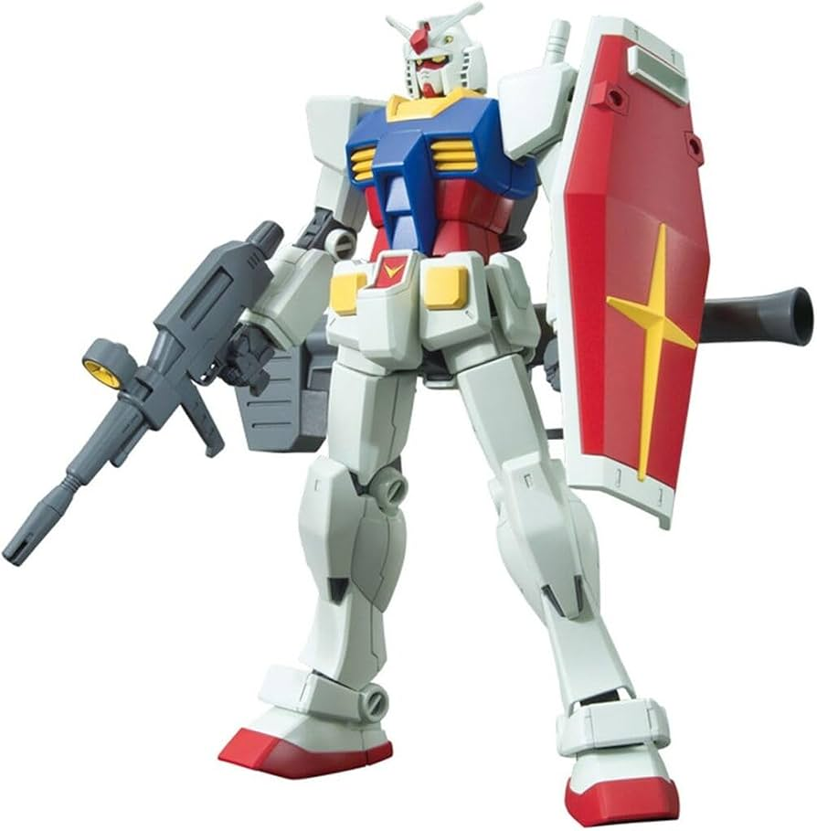
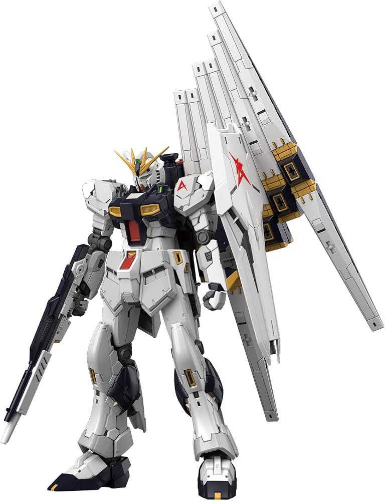
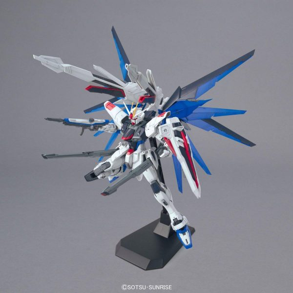

Overview of Popular Gunpla Model Grades
Standard Scale Categories
High Grade (HG) - 1/144 Scale
- Scale: 1/144 (approx. 12-13 cm tall)
- Difficulty: Beginner to Intermediate
- Key Feature: Massive variety of suits, affordable, and quick to assemble

HGUC 1/144 RX-78-2 Gundam (Revive Ver.)
Real Grade (RG) - 1/144 Scale
- Scale: 1/144 (approx. 12-14 cm tall)
- Difficulty: Intermediate to Advanced
- Key Feature: Advanced inner frame, realistic mechanical detail, and complex color separation

RG 1/144 Nu Gundam
Master Grade (MG) - 1/100 Scale
- Scale: 1/100 (approx. 18-20 cm tall)
- Difficulty: Advanced
- Key Feature: Full inner skeleton frame, opening cockpit hatches, and intricate articulation

MG 1/100 Freedom Gundam ZGMF-X10A Ver. 2.0